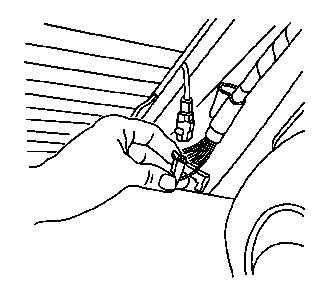
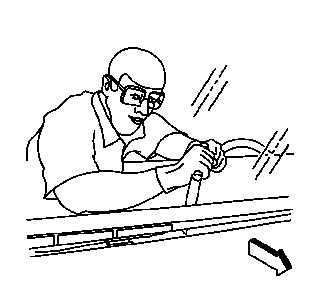

后窗的更换
- • BO-24402-A车窗玻璃密封胶清除工具（刮刀）
- • BO-39032固定车窗玻璃拆卸工具
专用工具
有关等效的当地工具, 参见专用工具。
拆卸程序
-
警告：如果车窗玻璃出现裂纹但保持完整，应使用遮蔽带交叉状粘贴到车窗玻璃上，以降低损坏或造成人身伤害的风险。1.打开行李厢盖。注意:在分离出固定式车窗前，在涂漆表面和内饰周围贴上双层遮蔽带。
-
2.断开后窗除雾器电气连接器（如装备）。
- 3.断开安吉星®天线（如装备）。
- 4.断开后车窗收音机天线连接器。
- 5.移除后窗板装饰板与后车窗接触部分的固定件。参见后窗板装饰件的更换。
- 6.移除车身侧后窗装饰条与后车窗接触部分的固定件。参见车身侧后窗装饰条的更换。
- 7.移除高位制动灯。参见高位制动灯的更换。
-
8.将以下部件盖住，以免碎玻璃进入:警告：如果碎裂的玻璃掉进除霜器出风口，可能被吹入乘客舱，造成人身伤害。
- • 前围上隔音垫
- • 除霜器出风口和空调出风口
- • 座椅和地毯
-
 9.使车辆粘合剂与车窗分离。注意:保持适当工具的刃口紧靠车窗。每个车窗上角各有一个车窗定位销。拆下车窗时，小心不要拆除或切断它们。如果车窗定位销被切断，务必用胶带将玻璃固定就位。
9.使车辆粘合剂与车窗分离。注意:保持适当工具的刃口紧靠车窗。每个车窗上角各有一个车窗定位销。拆下车窗时，小心不要拆除或切断它们。如果车窗定位销被切断，务必用胶带将玻璃固定就位。 - 10.拆下车身侧后窗装饰条。参见车身侧后窗装饰条的更换。
- • 在夹焊凸缘上保留聚氨酯粘合剂底层。
- • 清水是唯一合适的润滑剂。
- • BO-24402-A玻璃密封胶清除工具（刮刀）。
- • BO-39032固定车窗玻璃拆卸工具。
-
11.使用适当的工具，将车窗底部从车辆粘合剂上拆下。保持工具的刃口紧靠车窗。在车内完成此操作。
-
12.在助手的帮助下，将车窗(2) 从车辆上拆下。安 装前检查固定件(1) 仍连接至车窗。

安装程序
- 1.将后窗装入窗洞。参见后窗的粘合安装。
- 2.连接后窗除雾器电气连接器（若装备）。
- 3.安装后车窗收音机天线连接器。
- 4.连接安吉星®天线（如装备）。检查收音机和安吉星®系统，以确认接收效果。
- 5.安装后窗板装饰板与后车窗接触部分的固定件。参见后窗板装饰件的更换。
- 6.安装车身侧后窗装饰条与后车窗接触部分的固定件。参见车身侧后窗装饰条的更换。
- 7.安装高位制动灯。参见高位制动灯的更换。
- 8.关闭行李厢盖。
- 9.拆下涂漆表面和内饰周围的双层遮蔽带。